小程序之跨平台黑魔法
1.背景
2016年微信决定上线小程序业务至今，小程序的生态已经非常庞大，覆盖的行业类目，由最初的游戏延伸至快递、电商、餐饮、教育、文旅、政务等多个领域。
小程序的生态玩家也在不断增加：微信小程序、支付宝小程序、百度小程序、抖音小程序、qq小程序、头条小程序。
企业在享受各大平台小程序的开放能力、平台流量、商业能力的同时，面临着小程序业务能力对齐，跨平台开发成本高等问题。
2.产研团队面临的问题
快递行业面向客户的服务版块
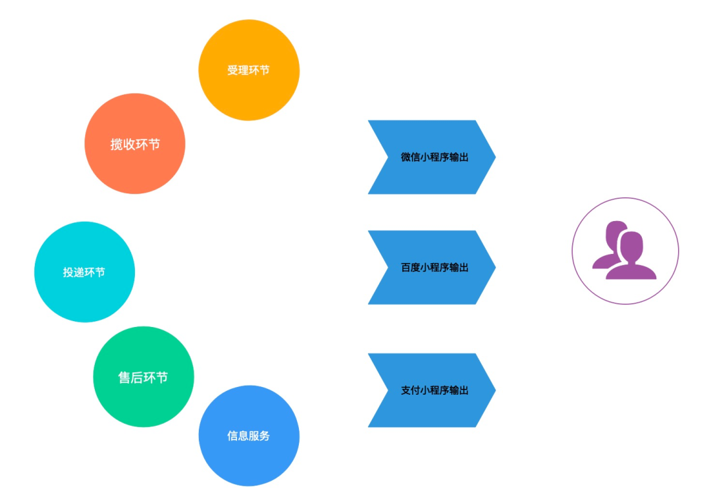
各大厂商的都有自己的小程序技术标准。
问题来了，业务团队希望各大平台的小程序服务都能及时同步，我们产品经理的需求也希望能在各平台小程序同步上线，以期望能更好的去抓住平台的流量，消除用户在平台切换时对服务能力的参差不齐的差异感，当用户在平台上需要快递服务时，能更快的响应到用户的需求，总体提升我们的服务质量。这也是各大小程序平台玩家希望看到的——平台快速连接商家的能力。
在这个关键因素的驱动下，研发团队不得不拆分出独立的小团队去维护不同平台的小程序，开发成本较高。
1 | 1 小程序平台 * n = n 个团队 |
1 | 2 n 个团队 * 协作效率 = 低效率 |
小程序的生态日渐丰富，技术标准逐渐成熟， 作为小程序平台的头部玩家，微信小程序是各大公司首先要运营的渠道，大家都希望抓住微信这个巨大的流量入口中的红利，将自身企业的服务能力通过小程序透传给用户。微信小程序平台的成长也伴随着服务提供商产品的演变，在运营小程序的过程中，我们也会碰到许多的问题。
小程序1.0 vs 小程序2.0
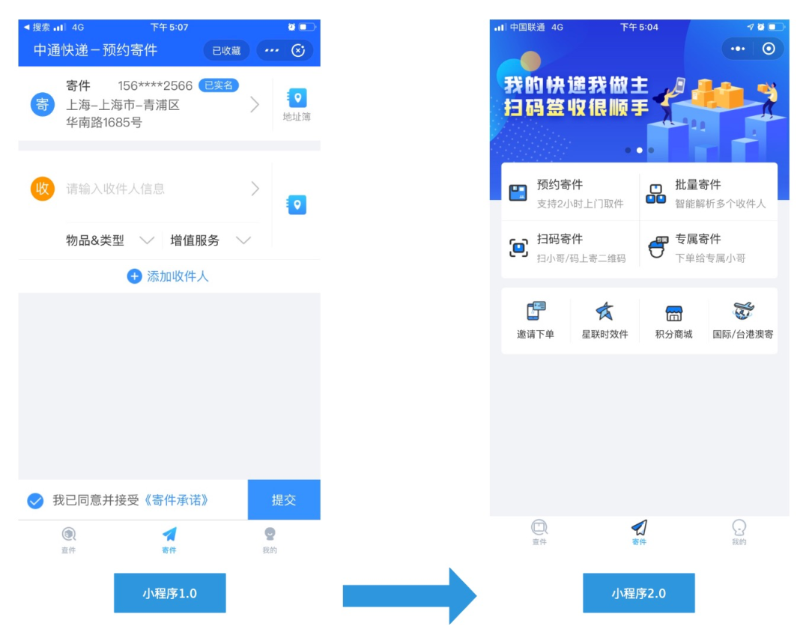
在产品演变的过程中，我们将服务于商家及散客的能力逐步的完善到小程序的能力当中去。随着服务能力及应用场景的逐渐完善。
产研团队面临着严重的效能问题：
一个需求
需要在不同的平台实现
需要踩不同平台的坑
需要管理不同平台的团队
需要写不同平台的小程序代码
研发团队如何解决这些问题？
3. 解决之道-跨平台方案
我们要寻求一套跨平台解决方案，多个平台只需维护一套代码，做到小程序代码的一次编写，多端运行。能基于这套解决方案，抹平各平台的差异，并在性能及体验上有所提升。如果有一套这样的解决方案，好处不言自明。
我们前期的一些选型分析，需满足：
一套代码可以同时生成iOS，Android，H5，微信小程序，支付宝小程序，百度小程序等。
如果能基于vue.js最好， 上手快，学习成本低。
经过一段时间的技术选型，我们采用具有跨平台编译功能的框架uni-app。uni-app是一个基于vue开发的前端应用框架，通过编写一套代码，可以在iOS，Android、H5、以及小程序等各端运行。采用uniapp进行开发，可能存在客户端与小程序api同步不及时的问题。为了衡量使用框架带来的风险，对uni-app的编译过程做了一个简单的分析。
1）开发环境
uni-app可以通过两种方式创建，HBuilderX和cli，但对于这两种方式创建的应用，编译、打包过程都是一致的，只不过HBuilderX创建的项目，会由HBuildeX内置(包括node等环境)的编译器进行编译，cli创建的项目，由安装在项目内部的编译器编译。整个编译器都由node实现，通过vue-cli的service插件对源码进行编译。
2) JSAPI编译
uniapp的JS语法基于VUE，大部分API参考微信小程序。在编写uniapp代码时，uni-app上的各种方法，最终会被编译为对应平台的API。uniapp将小程序的API分为3类：
a) 直接将小程序的API promisify之后挂载到uni-app上的API
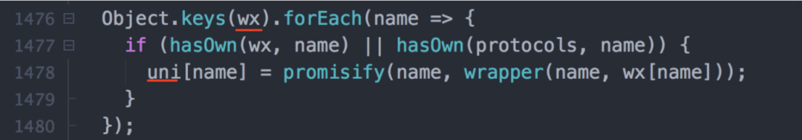
这类API是将wx上的API引用复制到uni-app上，在编译时不需要做任何处理，其调用效果和wx API完全一样。b) 需要做特殊处理的API
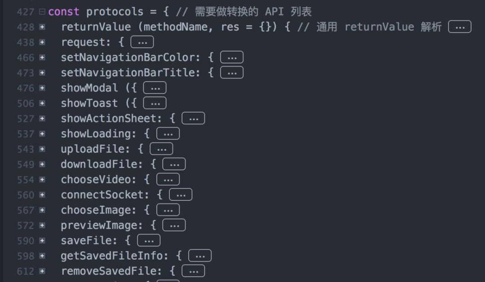
（支付宝小程序转换代码里面的截图）由于uni-app的API的功能实现参考了微信小程序，所以编译为微信小程序，uni-app除了一个向前兼容的API外，没有其它需要特殊处理的API，其它平台则需要对API做一些简单处理。c) 暂不支持的API
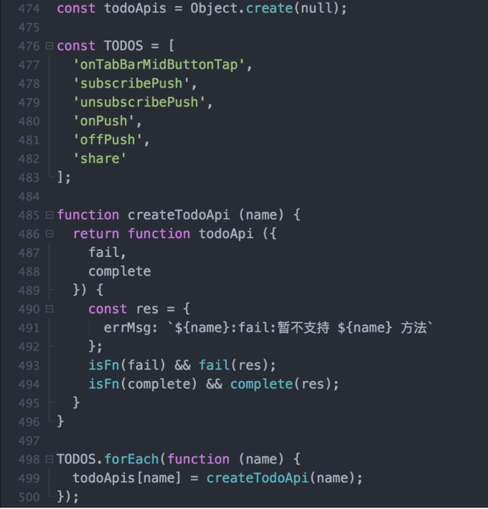
这类API通过uni-app直接使用会导致调用失败。要实现平台的这些功能，可以通过wx来访问。
综上，当小程序的API发生变化时，在uni-app提供解决方案前，可以把变更或新增的API视为uni-app暂不支持的API。在编写代码时可以通过条件注释在微信小程序使用wx暴露的api，其它平台依旧使用uni-app提供的API。以拨打电话为例，可以通过以下代码来应对微信小程序API的修改。
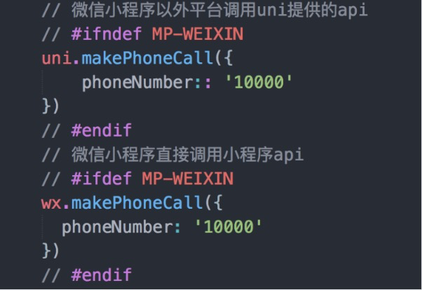
3）HTML编译
uniapp的模版语法同样也与vue保持一致，在编译过程中，模版会被转为抽象语法树，然后再对语法树进行修改，最终转换为微信小程序的语法，以v-for语法为例：
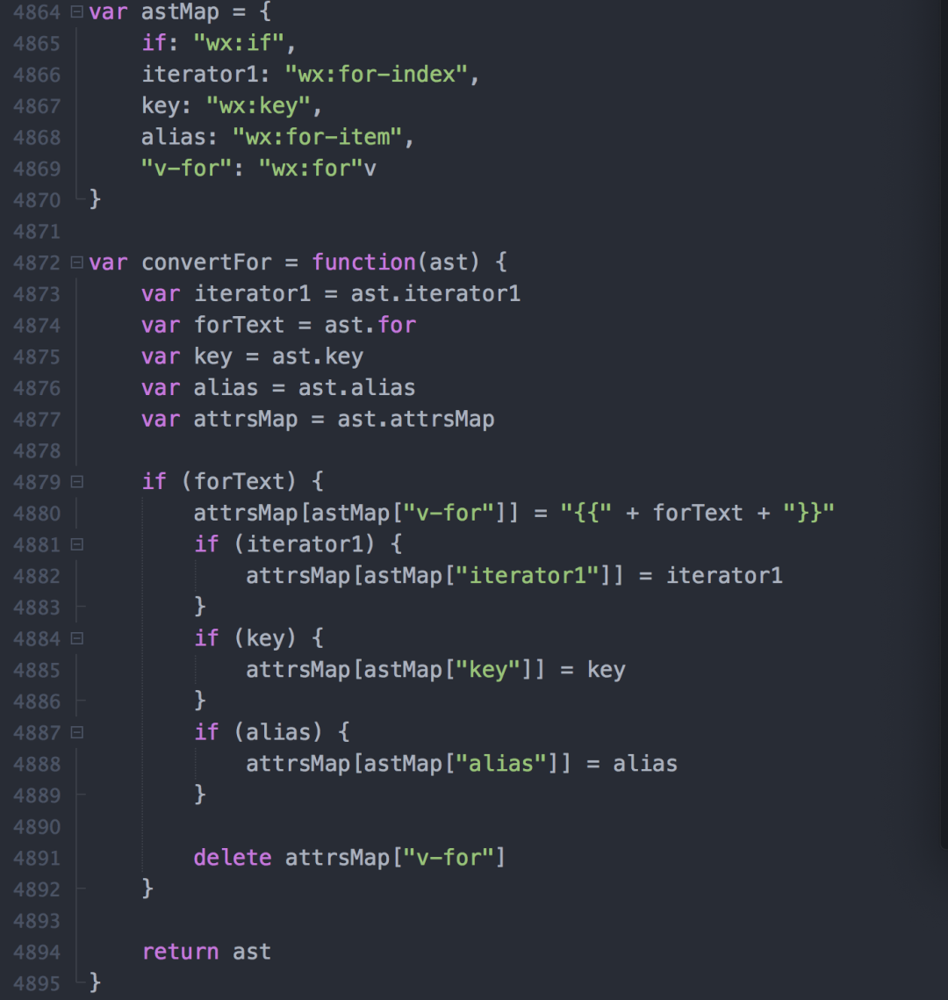
在编译之后，vue的v-for语法能全部转为wx:for。同样，HTML其它属性的编译也会通过对AST做必要的修改来完成。
HTML中的各种标签，在uniapp中都使用组件来替换。比如HTML中的div要替换成view，span替换成text、a替换成navigator。其中的view，text，navitator对应的都是不同的组件，在uniapp中 ，组件分为两种类型：内置组件和扩展组件 4）CSS编译
微信的小程序的wxss使用了css的大部分特性，主要的变化有3个：
新增了尺寸单位
样式分为全局样式和局部样式
支持部分选择器
目前在各端的css语法都一致，按照w3c的规范书写css，后期应该不会遇到因为小程序修改css规则导致有需要修改的地方。万一有个别端实现不一致的情况，也可以通过条件编译来实现跨平台。
uni-app解决的3个问题
多端泛滥
体验不好
生态不丰富
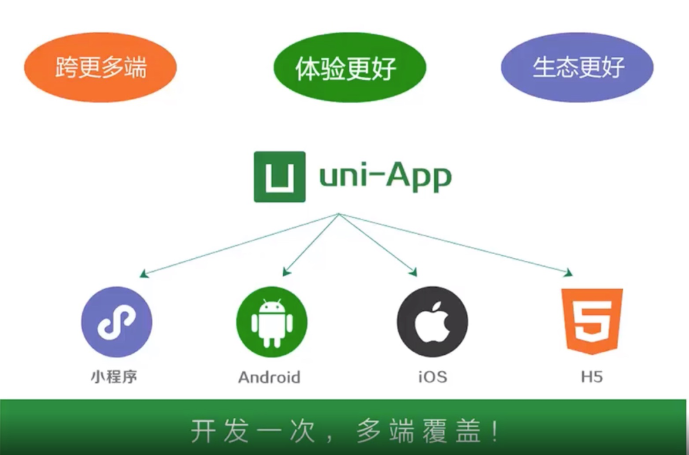
图片来自：uni-app官网
引入uni-app后，团队的研发效率大大提升，原先的小程序源码经过重构转换成uni-app项目，一个业务需求，只需要编写一份代码，经过编译，就能在多端运行。
这里讲一个引入uni-app后快速迭代的案例：
由于C端产品线团队与某平台合作，根据双方约定，需提升该平台我司小程序的用户体验及服务能力。由于项目交付周期紧，为了达到积极响应业务需求的目的，团队需快速决策该小程序的升级优化方案——在原有的原生框架进行升级开发，还是基于uni-app框架进行开发？
在对uni-app进行大量的技术预研后，团队最终敲定了方案：基于uni-app进行开发。事实证明这次决策是对的，团队快速的按质量要求交付了小程序版本。
4. 积累经验
1）条件编译
每个平台有自己的一些特征，因为需要针对不同平台做适配，如果编译到不同的工程之后，再做二次修改，会让后续的流程变得复杂低效。api的条件编译
1 | 1 // #ifdef %PLATFORM% |
1 | 2 平台特有的API实现 |
1 | 3 // #endif |
static目录条件编译，在不同平台，引用的静态资源可能也存在差异，通过 static 的的条件编译可以解决此问题
1 | 1 ┌─static |
1 | 2 │ ├─mp-weixin |
1 | 3 │ │ └─a.png |
1 | 4 │ └─b.png |
1 | 5 ├─main.js |
1 | 6 ├─App.vue |
1 | 7 ├─manifest.json |
1 | 8 └─pages.json |
2）渲染性能 原生小程序调用setdata更新页面流程：
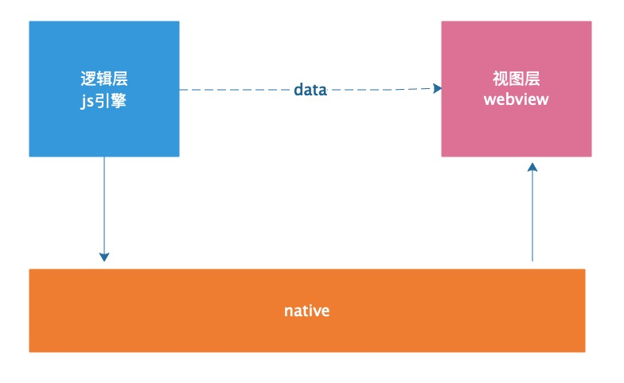
小程序在运行时，分逻辑层和视图层，当数据有发生变化的时候，逻辑层需要携带数据通知到视图层，而数据传递不是直接由逻辑层到视图层的，中间要先经过native层做转换，在转换的过程当中，传递和阻塞的性能消耗是比较大的，所以我们应该尽量减少setdata的调用频次和每次调用setdata时传递的数据量。
这里举例一个场景：
小程序下拉展示一个列表数据，比如我的快递列表，列表总共有 200 条数据，页面只展示 20 条，每次下拉刷新，当页面展示到100条时页面要如何赋值呢？
微信小程序的常见写法
1 | 1 data:{ |
1 | 2 list:['1' , '2' , '3' , '4'] |
1 | 3 }, |
1 | 4 |
1 | 5 // Event handler. |
1 | 6 viewTap: function() { |
1 | 7 let newdata = ['5' ,'6' ,'7' ,'8'] |
1 | 8 this.data.list.push(... newdata) |
1 | 9 this.setData({ |
1 | 10 list: this.data.list |
1 | 11 } |
1 | 12 } |
也就是说，每次下拉刷新，setdata的数据传输都会携带之前已经展示在页面上的数据，这个对小程序的性能消耗是很大。
针对这个问题，uni-app借助了webstore JSON Diff 库 ，实现高效、精确的差量数据计算更新。webstore JSON Diff库能针对复杂的js数据进行差量对比计算最小化。
JSON Diff
1 | 1 diff({ |
1 | 2 a: 1, b: 2, c: "str", d: { e: [2, { a: 4 }, 5] }, f: true, h: [1], g: { a: [1, 2], j: 111 } |
1 | 3 }, { |
1 | 4 a: [], b: "aa", c: 3, d: { e: [3, { a: 3 }] }, f: false, h: [1, 2], g: { a: [1, 1, 1], i: "delete" }, k: 'del' |
1 | 5 }) |
6
7 输出的结果是：
1 | 8 { "a": 1, "b": 2, "c": "str", "d.e[0]": 2, "d.e[1].a": 4, "d.e[2]": 5, "f": true, "h": [1], "g.a": [1, 2], "g.j": 111, "g.i": null, "k": null } |
3) 代码简化
利用vue的高度抽象，大幅缩减模型的处理代码。以运单详情页为例，快递小哥卡片的代码逻辑分布在400行代码内，在这400行代码内需要处理各种运单状态及查看人和运单的关系。
简化之后的版本，利用vue的computed，对所有的场景进行列举，仅使用70行代码实现该功能，其中每个ui的显示与否，都独立开，也更方便后期的维护
4）界面突变的问题 在重构前，大部分气泡或者浮层都没有动画效果，当出现弹窗时，由于移动设备屏幕相对较小，界面很容易发生大面积的突变，导致用户难以理解应用的逻辑，进而觉得应用使用起来不是特别顺手，重构之后的版本，引入uni-app第三方动画组件，对所有的气泡和浮层添加动画，尽量避免界面上的突变。重构的同时，还使用了一些其它优秀的uniapp组件对界面进行优化。
5. 整合后台服务
另一方面是我们要将后台服务整合好——统一鉴权、统一协议、统一的api元数据管理、微服务化、服务网关。
这里介绍一下服务端的架构演进：
V1.0 （2016以前）
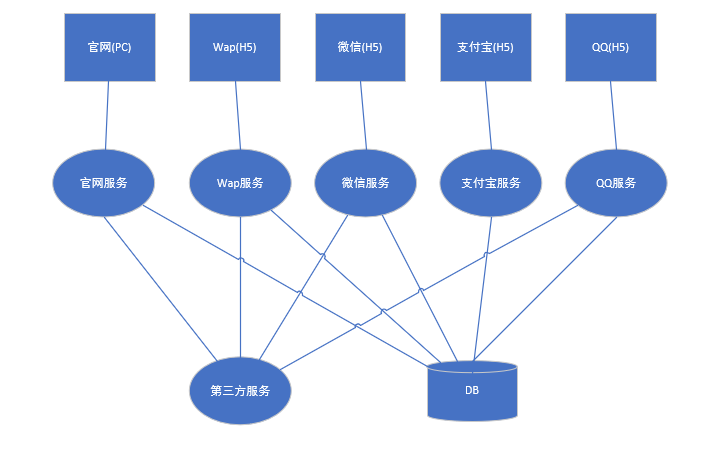
每个端都有独立的后端，公共服务没有抽离，一些相同的业务代码，需要在不同的服务端去重复实现。可以想象改动一个功能点，研发团队会有多么的痛苦。
V2.0（2016~2017）
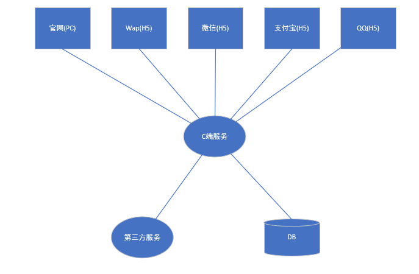
后端服务已经整合，单体式架构，业务代码耦合严重，没有形成业务中台，业务域服务域划分不清晰，服务之间没有做隔离，数据层单一，出问题时容易引发雪崩。在技术架构上不利于业务及团队自然增长。
V3.0（2018~至今）
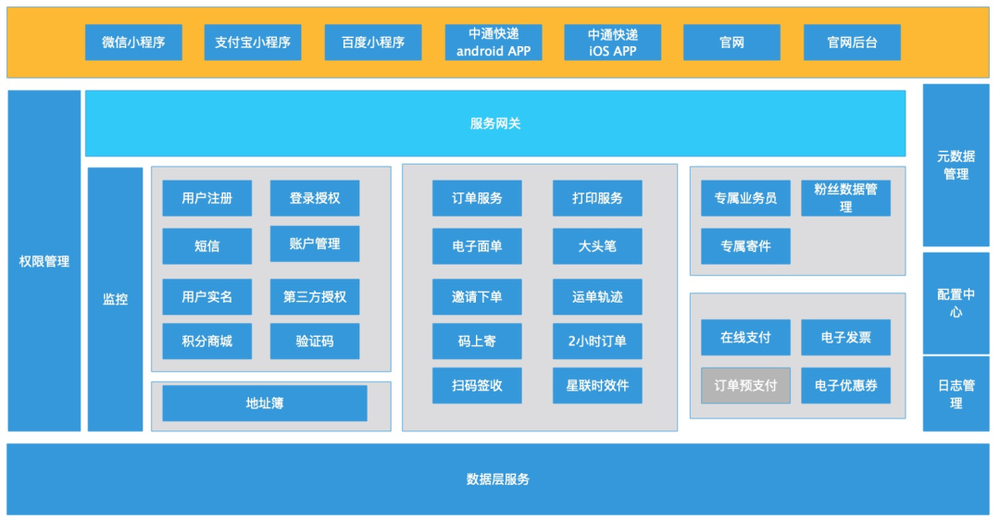
形成了统一的服务网关及业务中台，业务域与服务域做了良好划分，统一的权限、元数据、配置、微服务管理。（本文作者：阳慧松）